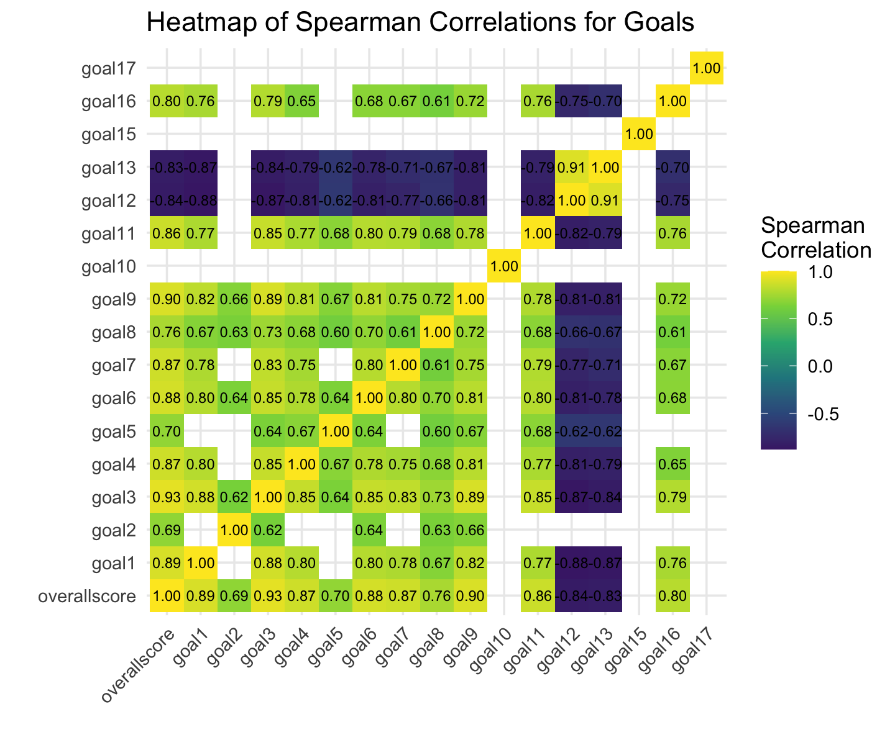
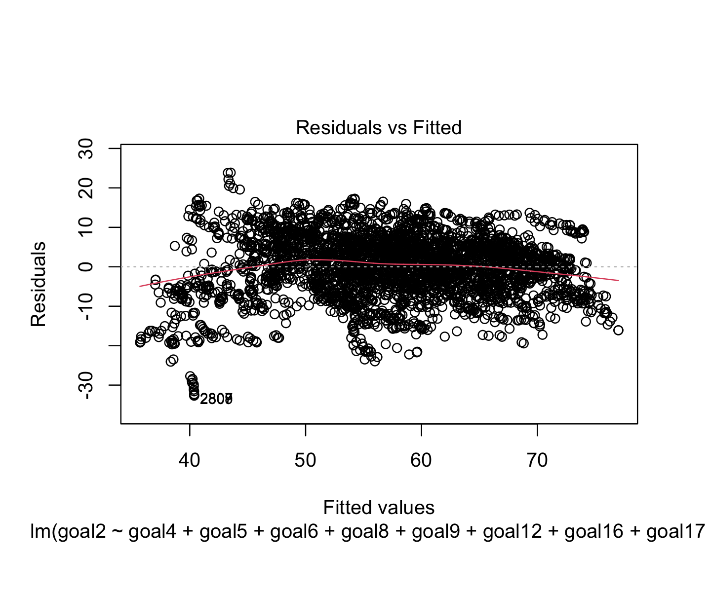
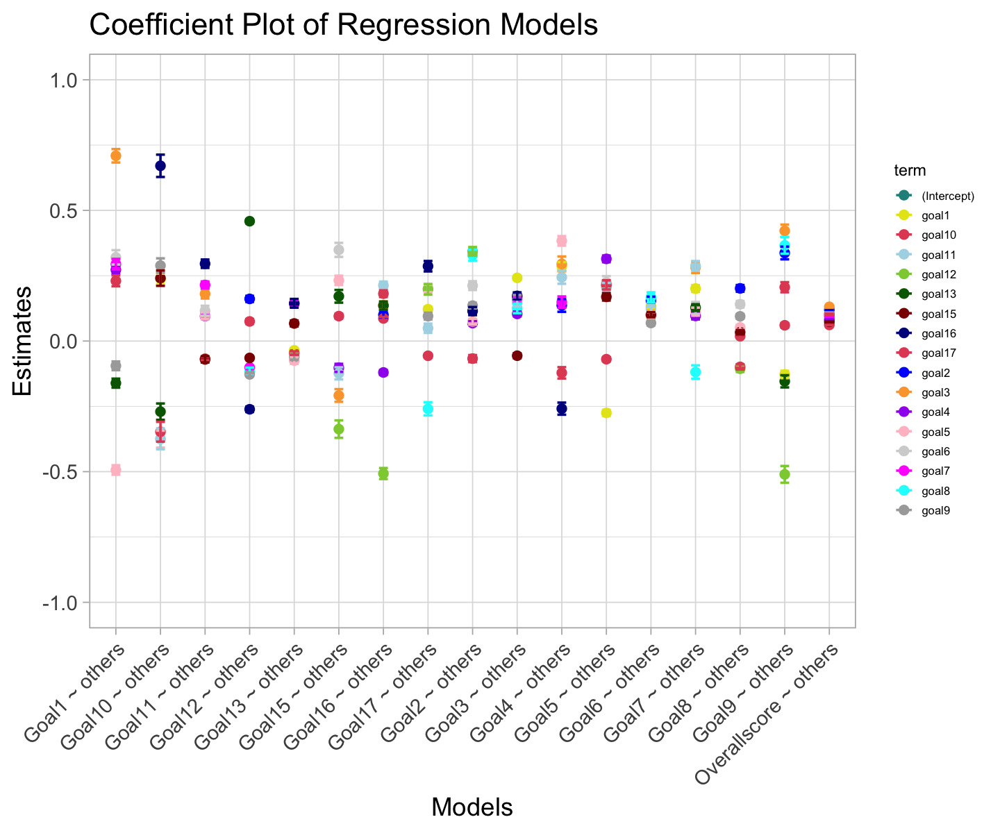
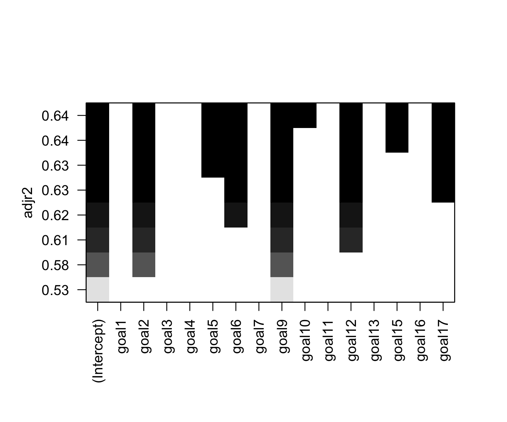
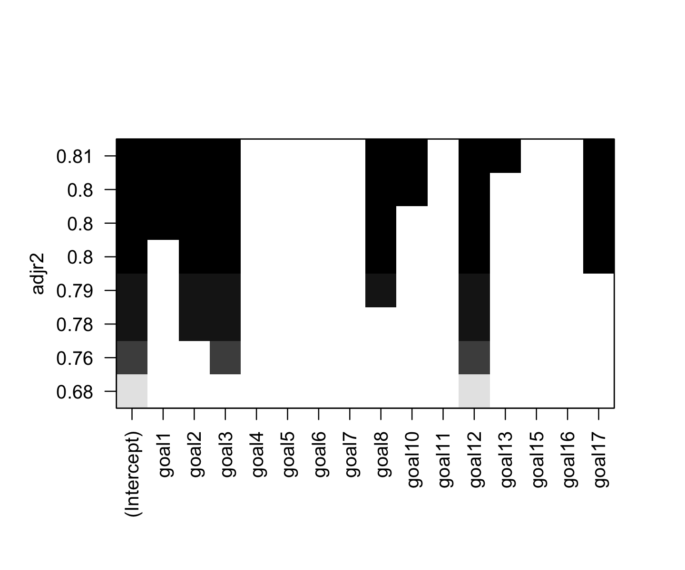
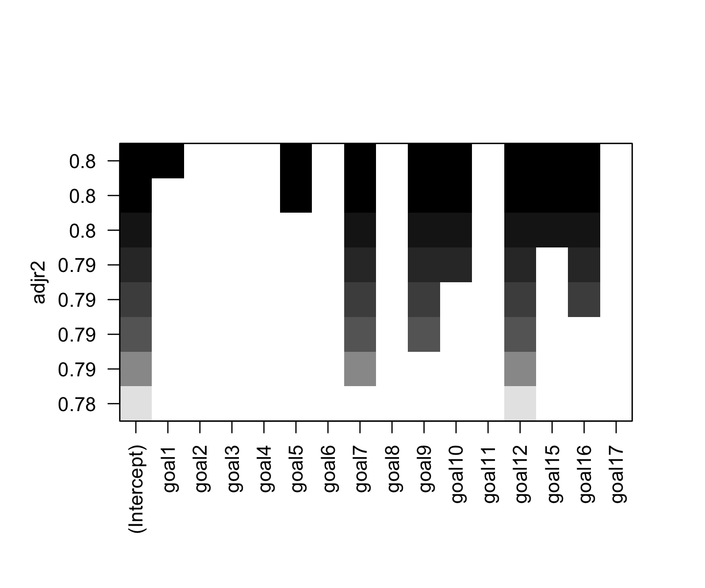
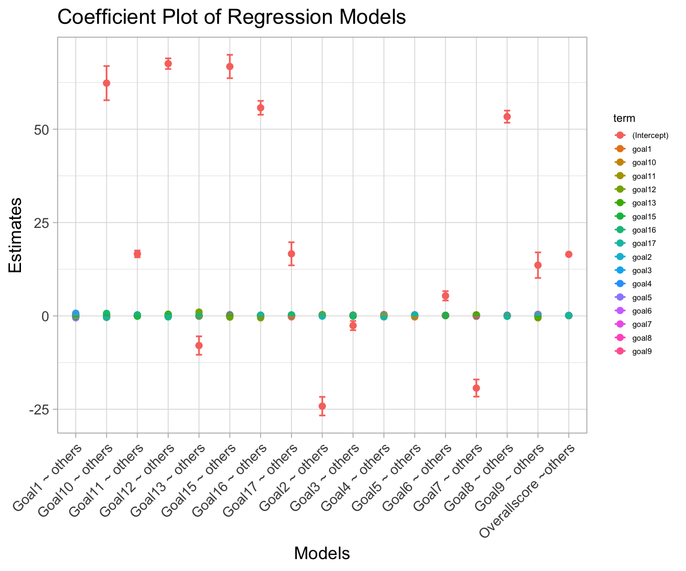

#### Preparation of the data ####
# Keeping only the columns of interest for the correlation calcluation
data_4_goals <- data_4 %>%
dplyr::select(overallscore, goal1, goal2, goal3, goal4, goal5,
goal6,goal7, goal8, goal9, goal10, goal11, goal12,
goal13, goal15, goal16, goal17)Focus on the relationships among the SDGs
How are the different SDGs linked? (We want to see if some SDGs are linked in the fact that a high score on one implies a high score on the other, and thus if we can make groups of SDGs that are comparable in that way).
EDA: General visualization of the SDGs
We want now to explore and analyse how the SDGs scores are linked together. We first, interest ourself to the correlation between the goals scores. To do that we chose to use a correlation heatmap. We set an arbitrary threashold to better concentrate our attention to the most corrolated goals. We fixed our threashold at 0.5 (indicating a strong positive relationship) and less than -0.5 (signifying a strong negative relationship).
Given that, as seen previously, our variables do not follow a normal distribution, employing the Pearson correlation method is not suitable in our analysis since it requires observations to be normaly distributed. We attempted to normalize the data through logarithmic or square root transformations, but these adjustments were insufficiently effective. Consequently, we will resort to computing the Spearman correlation. While not ideal, this method does not necessitate the normal distribution of our data. In our analysis, particularly for the heatmap visualization, we will focus on correlations that exceed the threshold of 0.5 or fall below -0.5. This selective approach will enhance the readability and interpretability of the heatmap.
To do that, we select only the colums of interest and compute the correlation matrix using Spearman correlation. We then melt the matrix to be able to plot it. We then plot the heatmap using ggplot2.
#### Spearman Correlation ####
# Calculate Spearman correlation
spearman_corr_4 <-cor(data_4_goals, method = "spearman", use = "everything")
# Apply threshold and replace values below it with NA
spearman_corr_4[abs(spearman_corr_4) < threashold_heatmap] <- NA#### Spearman Correlation Heatmap ####
# Melting the data
melted_corr_4 <- melt(spearman_corr_4, na.rm = TRUE)
# Creation of the heatmap
ggplot(data = melted_corr_4, aes(x = Var1, y = Var2, fill = value)) +
geom_tile() +
geom_text(aes(label = sprintf("%.2f", value)), vjust = 0.5, size=2.5) + # Adding text
scale_fill_gradient2(low = "blue", high = "red", mid = "white",
midpoint = 0, limit = c(-1,1), space = "Lab",
name="Spearman\nCorrelation",
na.value = "grey") +
theme_minimal() +
theme(axis.text.x = element_text(angle = 45, hjust = 1)) +
labs(title = "Heatmap of Spearman Correlations for Goals",
x = "", y = "")
The correaltion can be read on the graph. The darker the color, the stronger the correlation. If there is not colors, it means that the gaols correlation does not exceed our threashold of ±0.5.
It is evident that the Sustainable Development Goals (SDGs) are intricately interconnected. However, certain goals appear to be less interrelated compared to others. Specifically, SDG 1 (No Poverty) and SDG 10 (Reduced Inequalities) demonstrate a weaker correlation with the rest of the goals. Similarly, Goal 15 (Life on Land) also exhibits a lesser degree of interconnection with the other SDGs. It is also interesting to note that some goals are negatively correlated with others. For instance, based on the Spearman correlation, goal 12 (Responsable Consumption and Production) and goal 13 (Climate Action) are negatively correlated with the others goals. This suggest that when the higher a goal other than goal 12 or 13 is, the lower the goals 12 and 13 are. Given their similar nature, it is not surprising that they are highly correlated with each other.
Analysis: Factor analysis and Stepwise regression applied to the SDGs
At this point, we saw that the goals were mostly correlated. We now want to see if we can group them in a smaller number of factors. To do that, we will use a principal component analysis (PCA). We will first look at the scree plot to see how many factors we should keep. We will then look at the biplot to see how the goals are grouped together.
#### Scree Plot ####
# Selecting only the goals columns
goals_data <- data_4 %>%
dplyr::select(goal1, goal2, goal3, goal4, goal5,
goal6,goal7, goal8, goal9, goal10, goal11, goal12,
goal13, goal15, goal16, goal17)
goals_data_scaled <- scale(goals_data) # Scaling the data
pca_result <- prcomp(goals_data_scaled) # Running PCA
# Plotting Scree plot to visualize the importance of each principal component
fviz_eig(pca_result,
addlabels = TRUE,
col.var="dodgerblue3") +
theme_minimal()
eigenvalues <- pca_result$sdev^2 # getting the eigenvalues
We see clearly that the first component is the most important one. Guided by the Kaiser criterion, which advises retaining only those components with eigenvalues exceeding 1, the initial three components emerge as candidates. However, considering the third component’s eigenvalue of 1.016, we opted for simplification by focusing exclusively on the first two components even though the third eigenvalue is technically higher than 1. This decision also enhances clarity in the biplot representation, as it reduces the dimensions to just two, making interpretation more straightforward.
#### Biplot ####
# Plotting Biplot to visualize the two main dimensions
fviz_pca_biplot(pca_result,
label="var",
col.var="dodgerblue3",
geom="point",
pointsize = 0.1,
labelsize = 4) +
theme_minimal()
The biplot offers insightful visualization, clearly illustrating the relationship between the various goals and the first two components. Notably, Dimension 2 exhibits a strong correlation with Goals 10 (Reduced inequalities) and 15 (Life on Land), whereas the remaining goals show a moderate to high correlation with Dimension 1. Furthermore, an interesting pattern emerges, revealing three distinct groups of variables, each playing a unique role. One group comprises Goals 12 (Responsible Consumption and Production) and 13 (Climate Action), another encompasses Goals 10 (Reduced inequalities) and 15 (Life on Land), and the third group includes all other variables. This categorization aids in understanding the distinct influences and interactions among the goals.
Grouping Goal 12 (Responsible Consumption and Production) and Goal 13 (Climate Action) together is logical, as both pertain to environmental issues. It is, however, interesting to note the pairing of Goal 10 (Reduced Inequalities) with Goal 15 (Life on Land). This could be explained by the fact that Goal 10 (Reduced inequalities) is related to the reduction of inequalities within and among countries, while Goal 15 (Life on Land) is related to the protection, restoration and promotion of sustainable use of terrestrial ecosystems, sustainable manage forests, combat desertification, and halt and reverse land degradation and halt biodiversity loss. Therefore, it is possible that the respondents who are more concerned about the reduction of inequalities are also more concerned about the protection of the environment. But this is a stretched.
///////////////////////////////////////////////////////////////////////// ////////////////////////////// WIP ///////////////////////////////// /////////////////////////////////////////////////////////////////////////
#### Preparation of the data ####
goals_data <- data_4 %>%
dplyr::select(overallscore, goal1, goal2, goal3, goal4, goal5,
goal6,goal7, goal8, goal9, goal10, goal11, goal12,
goal13, goal15, goal16, goal17)#### Overallscore ~ others ####
# Finding the best model
leaps_o <- regsubsets(overallscore ~ goal1 + goal2 + goal3 + goal4 + goal5 + goal6 + goal7 + goal8 + goal9 + goal10 + goal11 + goal12 + goal13 + goal15 + goal16 + goal17, data = goals_data, nbest=1, method = "forward")
plot(leaps_o, scale="adjr2") + theme_minimal()
#> NULL
# Analyzing the best model
mod_o <- lm(overallscore ~ goal2 + goal3 + goal4 + goal6 + goal7 + goal10 + goal15 + goal17, data = goals_data)
plot(mod_o, which = 1)
vif(mod_o)
#> goal2 goal3 goal4 goal6 goal7 goal10 goal15 goal17
#> 1.77 7.11 4.00 4.20 4.56 1.34 1.16 1.48

#### Goal1 ~ others ####
# Finding the best model
leaps_1 <- regsubsets(goal1 ~ goal2 + goal3 + goal4 + goal5 + goal6 + goal7 + goal8 + goal9 + goal10 + goal11 + goal12 + goal13 + goal15 + goal16 + goal17, data = goals_data, nbest=1, method = "forward")
plot(leaps_1, scale="adjr2") + theme_minimal()
#> NULL
# Analyzing the best model
mod_1 <- lm(goal1 ~ goal3 + goal4 + goal5 + goal6 + goal7 + goal9 + goal13 + goal17, data = goals_data)
plot(mod_1, which = 1)
vif(mod_1)
#> goal3 goal4 goal5 goal6 goal7 goal9 goal13 goal17
#> 8.02 4.25 2.28 4.05 4.68 4.34 2.32 1.52

#### Goal2 ~ others ####
# Finding the best model
leaps_2 <- regsubsets(goal2 ~ goal1 + goal3 + goal4 + goal5 + goal6 + goal7 + goal8 + goal9 + goal10 + goal11 + goal12 + goal13 + goal15 + goal16 + goal17, data = goals_data, nbest=1, method = "forward")
plot(leaps_2, scale="adjr2") + theme_minimal()
#> NULL
# Analyzing the best model
mod_2 <- lm(goal2 ~ goal4 + goal5 + goal6 + goal8 + goal9 + goal12 + goal16 + goal17, data = goals_data)
plot(mod_2, which = 1)
vif(mod_2)
#> goal4 goal5 goal6 goal8 goal9 goal12 goal16 goal17
#> 2.80 2.26 3.78 2.56 4.54 4.21 3.08 1.64

#### Goal3 ~ others ####
# Finding the best model
leaps_3 <- regsubsets(goal3 ~ goal1 + goal2 + goal4 + goal5 + goal6 + goal7 + goal8 + goal9 + goal10 + goal11 + goal12 + goal13 + goal15 + goal16 + goal17, data = goals_data, nbest=1, method = "forward")
plot(leaps_3, scale="adjr2") + theme_minimal()
#> NULL
# Analyzing the best model
mod_3 <- lm(goal3 ~ goal1 + goal4 + goal7 + goal8 + goal9 + goal11 + goal15 + goal16, data = goals_data)
vif(mod_3)
#> goal1 goal4 goal7 goal8 goal9 goal11 goal15 goal16
#> 4.30 4.11 4.83 2.35 3.47 4.41 1.11 2.87
#### Goal4 ~ others ####
# Finding the best model
leaps_4 <- regsubsets(goal4 ~ goal1 + goal2 + goal3 + goal5 + goal6 + goal7 + goal8 + goal9 + goal10 + goal11 + goal12 + goal13 + goal15 + goal16 + goal17, data = goals_data, nbest=1, method = "forward")
plot(leaps_4, scale="adjr2") + theme_minimal()
#> NULL
# Analyzing the best model
mod_4 <- lm(goal4 ~ goal1 + goal2 + goal3 + goal5 + goal7 + goal11 + goal16 + goal17, data = goals_data)
vif(mod_4)
#> goal1 goal2 goal3 goal5 goal7 goal11 goal16 goal17
#> 5.97 1.68 9.33 2.22 5.07 4.56 2.63 1.61
#### Goal5 ~ others ####
# Finding the best model
leaps_5 <- regsubsets(goal5 ~ goal1 + goal2 + goal3 + goal4 + goal6 + goal7 + goal8 + goal9 + goal10 + goal11 + goal12 + goal13 + goal15 + goal16 + goal17, data = goals_data, nbest=1, method = "forward")
plot(leaps_5, scale="adjr2") + theme_minimal()
#> NULL
# Analyzing the best model
mod_5 <- lm(goal5 ~ goal1 + goal4 + goal6 + goal9 + goal10 + goal11 + goal15 + goal17, data = goals_data)
vif(mod_5)
#> goal1 goal4 goal6 goal9 goal10 goal11 goal15 goal17
#> 4.31 3.85 4.28 3.17 1.50 3.74 1.16 1.55
#### Goal6 ~ others ####
# Finding the best model
leaps_6 <- regsubsets(goal6 ~ goal1 + goal2 + goal3 + goal4 + goal5 + goal7 + goal8 + goal9 + goal10 + goal11 + goal12 + goal13 + goal15 + goal16 + goal17, data = goals_data, nbest=1, method = "forward")
plot(leaps_6, scale="adjr2") + theme_minimal()
#> NULL
# Analyzing the best model
mod_6 <- lm(goal6 ~ goal1 + goal2 + goal3 + goal5 + goal8 + goal9 + goal11 + goal15, data = goals_data)
vif(mod_6)
#> goal1 goal2 goal3 goal5 goal8 goal9 goal11 goal15
#> 5.27 1.86 9.78 2.30 2.56 3.82 3.99 1.12
#### Goal7 ~ others ####
# Finding the best model
leaps_7 <- regsubsets(goal7 ~ goal1 + goal2 + goal3 + goal4 + goal5 + goal6 + goal8 + goal9 + goal10 + goal11 + goal12 + goal13 + goal15 + goal16 + goal17, data = goals_data, nbest=1, method = "forward")
plot(leaps_7, scale="adjr2") + theme_minimal()
#> NULL
# Analyzing the best model
mod_7 <- lm(goal7 ~ goal1 + goal3 + goal4 + goal5 + goal6 + goal8 + goal11 + goal13, data = goals_data)
vif(mod_7)
#> goal1 goal3 goal4 goal5 goal6 goal8 goal11 goal13
#> 6.27 8.97 4.55 2.56 4.37 2.32 4.12 1.95
#### Goal8 ~ others ####
# Finding the best model
leaps_8 <- regsubsets(goal8 ~ goal1 + goal2 + goal3 + goal4 + goal5 + goal6 + goal7 + goal9 + goal10 + goal11 + goal12 + goal13 + goal15 + goal16 + goal17, data = goals_data, nbest=1, method = "forward")
plot(leaps_8, scale="adjr2") + theme_minimal()
#> NULL
# Analyzing the best model
mod_8 <- lm(goal8 ~ goal2 + goal5 + goal6 + goal9 + goal10 + goal12 + goal15 + goal17, data = goals_data)
vif(mod_8)
#> goal2 goal5 goal6 goal9 goal10 goal12 goal15 goal17
#> 1.98 2.32 3.44 4.79 1.53 3.89 1.11 1.48
#### Goal9 ~ others ####
# Finding the best model
leaps_9 <- regsubsets(goal9 ~ goal1 + goal2 + goal3 + goal4 + goal5 + goal6 + goal7 + goal8 + goal10 + goal11 + goal12 + goal13 + goal15 + goal16 + goal17, data = goals_data, nbest=1, method = "forward")
plot(leaps_9, scale="adjr2") + theme_minimal()
#> NULL
# Analyzing the best model
mod_9 <- lm(goal9 ~ goal1 + goal2 + goal3 + goal8 + goal10 + goal12 + goal13 + goal17, data = goals_data)
vif(mod_9)
#> goal1 goal2 goal3 goal8 goal10 goal12 goal13 goal17
#> 5.04 1.88 7.54 2.54 1.41 6.98 4.64 1.45
#### Goal10 ~ others ####
# Finding the best model
leaps_10 <- regsubsets(goal10 ~ goal1 + goal2 + goal3 + goal4 + goal5 + goal6 + goal7 + goal8 + goal9 + goal11 + goal12 + goal13 + goal15 + goal16 + goal17, data = goals_data, nbest=1, method = "forward")
plot(leaps_10, scale="adjr2") + theme_minimal()
#> NULL
# Analyzing the best model
mod_10 <- lm(goal10 ~ goal1 + goal5 + goal9 + goal11 + goal13 + goal15 + goal16 + goal17, data = goals_data)
vif(mod_10)
#> goal1 goal5 goal9 goal11 goal13 goal15 goal16 goal17
#> 3.06 2.32 3.80 3.89 2.42 1.13 2.97 1.62
#### Goal11 ~ others ####
# Finding the best model
leaps_11 <- regsubsets(goal11 ~ goal1 + goal2 + goal3 + goal4 + goal5 + goal6 + goal7 + goal8 + goal9 + goal10 + goal12 + goal13 + goal15 + goal16 + goal17, data = goals_data, nbest=1, method = "forward")
plot(leaps_11, scale="adjr2") + theme_minimal()
#> NULL
# Analyzing the best model
mod_11 <- lm(goal11 ~ goal3 + goal4 + goal5 + goal6 + goal7 + goal10 + goal15 + goal16, data = goals_data)
vif(mod_11)
#> goal3 goal4 goal5 goal6 goal7 goal10 goal15 goal16
#> 8.09 4.38 2.21 4.05 4.50 1.47 1.22 2.81
#### Goal12 ~ others ####
# Finding the best model
leaps_12 <- regsubsets(goal12 ~ goal1 + goal2 + goal3 + goal4 + goal5 + goal6 + goal7 + goal8 + goal9 + goal10 + goal11 + goal13 + goal15 + goal16 + goal17, data = goals_data, nbest=1, method = "forward")
plot(leaps_12, scale="adjr2") + theme_minimal()
#> NULL
# Analyzing the best model
mod_12 <- lm(goal12 ~ goal2 + goal7 + goal8 + goal9 + goal13 + goal15 + goal16 + goal17, data = goals_data)
vif(mod_12)
#> goal2 goal7 goal8 goal9 goal13 goal15 goal16 goal17
#> 1.91 2.40 2.60 4.34 2.48 1.10 2.69 1.53
#### Goal13 ~ others ####
# Finding the best model
leaps_13 <- regsubsets(goal13 ~ goal1 + goal2 + goal3 + goal4 + goal5 + goal6 + goal7 + goal8 + goal9 + goal10 + goal11 + goal12 + goal15 + goal16 + goal17, data = goals_data, nbest=1, method = "forward")
plot(leaps_13, scale="adjr2") + theme_minimal()
#> NULL
# Analyzing the best model
mod_13 <- lm(goal13 ~ goal1 + goal5 + goal7 + goal9 + goal10 + goal12 + goal15 + goal16, data = goals_data)
vif(mod_13)
#> goal1 goal5 goal7 goal9 goal10 goal12 goal15 goal16
#> 4.14 2.30 4.19 4.13 1.58 4.24 1.15 3.05
#### Goal15 ~ others ####
# Finding the best model
leaps_15 <- regsubsets(goal15 ~ goal1 + goal2 + goal3 + goal4 + goal5 + goal6 + goal7 + goal8 + goal9 + goal10 + goal11 + goal12 + goal13 + goal16 + goal17, data = goals_data, nbest=1, method = "forward")
plot(leaps_15, scale="adjr2") + theme_minimal()
#> NULL
# Analyzing the best model
mod_15 <- lm(goal15 ~ goal3 + goal4 + goal5 + goal6 + goal10 + goal11 + goal12 + goal13, data = goals_data)
vif(mod_15)
#> goal3 goal4 goal5 goal6 goal10 goal11 goal12 goal13
#> 7.20 4.09 2.23 3.90 1.50 4.22 6.94 4.66
#### Goal16 ~ others ####
# Finding the best model
leaps_16 <- regsubsets(goal16 ~ goal1 + goal2 + goal3 + goal4 + goal5 + goal6 + goal7 + goal8 + goal9 + goal10 + goal11 + goal12 + goal13 + goal15 + goal17, data = goals_data, nbest=1, method = "forward")
plot(leaps_16, scale="adjr2") + theme_minimal()
#> NULL
# Analyzing the best model
mod_16 <- lm(goal16 ~ goal2 + goal3 + goal4 + goal10 + goal11 + goal12 + goal13 + goal17, data = goals_data)
vif(mod_16)
#> goal2 goal3 goal4 goal10 goal11 goal12 goal13 goal17
#> 1.64 6.74 3.86 1.45 4.19 6.82 4.65 1.46
#### Goal17 ~ others ####
# Finding the best model
leaps_17 <- regsubsets(goal17 ~ goal1 + goal2 + goal3 + goal4 + goal5 + goal6 + goal7 + goal8 + goal9 + goal10 + goal11 + goal12 + goal13 + goal15 + goal16, data = goals_data, nbest=1, method = "forward")
plot(leaps_17, scale="adjr2") + theme_minimal()
#> NULL
# Analyzing the best model
mod_17 <- lm(goal17 ~ goal1 + goal5 + goal8 + goal9 + goal10 + goal11 + goal12 + goal16, data = goals_data)
vif(mod_17)
#> goal1 goal5 goal8 goal9 goal10 goal11 goal12 goal16
#> 3.09 2.27 2.36 4.47 1.62 3.92 4.23 3.33
library('broom')
# Create a dataframe of tidy models
model_list <- list(mod_o, mod_1, mod_2, mod_3, mod_4, mod_5, mod_6, mod_7, mod_8, mod_9, mod_10, mod_11, mod_12, mod_13, mod_15, mod_16, mod_17)
models_tidy <- lapply(model_list, tidy)
models_tidy
#> [[1]]
#> # A tibble: 9 x 5
#> term estimate std.error statistic p.value
#> <chr> <dbl> <dbl> <dbl> <dbl>
#> 1 (Intercept) 16.5 0.201 81.9 0
#> 2 goal2 0.119 0.00316 37.7 8.29e-260
#> 3 goal3 0.131 0.00311 42.1 1.89e-311
#> 4 goal4 0.0827 0.00197 42.0 1.48e-309
#> 5 goal6 0.105 0.00359 29.4 1.03e-168
#> 6 goal7 0.0949 0.00256 37.1 7.86e-253
#> 7 goal10 0.0616 0.00112 55.2 0
#> 8 goal15 0.0736 0.00215 34.2 3.23e-220
#> 9 goal17 0.103 0.00262 39.3 4.71e-278
#>
#> [[2]]
#> # A tibble: 9 x 5
#> term estimate std.error statistic p.value
#> <chr> <dbl> <dbl> <dbl> <dbl>
#> 1 (Intercept) 1.21 2.33 0.520 6.03e- 1
#> 2 goal3 0.709 0.0258 27.5 1.60e-150
#> 3 goal4 0.273 0.0159 17.2 1.44e- 63
#> 4 goal5 -0.494 0.0181 -27.2 1.61e-147
#> 5 goal6 0.320 0.0275 11.6 9.21e- 31
#> 6 goal7 0.294 0.0202 14.6 1.51e- 46
#> 7 goal9 -0.0949 0.0167 -5.68 1.44e- 8
#> 8 goal13 -0.161 0.0173 -9.32 2.03e- 20
#> 9 goal17 0.230 0.0207 11.1 3.35e- 28
#>
#> [[3]]
#> # A tibble: 9 x 5
#> term estimate std.error statistic p.value
#> <chr> <dbl> <dbl> <dbl> <dbl>
#> 1 (Intercept) -24.2 2.49 -9.71 5.50e-22
#> 2 goal4 0.0686 0.00813 8.44 4.78e-17
#> 3 goal5 0.0740 0.0114 6.50 9.13e-11
#> 4 goal6 0.212 0.0168 12.6 8.50e-36
#> 5 goal8 0.329 0.0212 15.5 2.52e-52
#> 6 goal9 0.135 0.0108 12.6 1.76e-35
#> 7 goal12 0.343 0.0165 20.8 3.60e-90
#> 8 goal16 0.115 0.0155 7.39 1.81e-13
#> 9 goal17 -0.0671 0.0136 -4.94 8.06e- 7
#>
#> [[4]]
#> # A tibble: 9 x 5
#> term estimate std.error statistic p.value
#> <chr> <dbl> <dbl> <dbl> <dbl>
#> 1 (Intercept) -2.60 1.23 -2.11 3.48e- 2
#> 2 goal1 0.242 0.00781 31.0 3.81e-185
#> 3 goal4 0.104 0.00895 11.6 1.52e- 30
#> 4 goal7 0.159 0.0118 13.5 1.71e- 40
#> 5 goal8 0.125 0.0185 6.78 1.46e- 11
#> 6 goal9 0.168 0.00855 19.6 4.20e- 81
#> 7 goal11 0.147 0.0138 10.7 3.11e- 26
#> 8 goal15 -0.0561 0.00944 -5.95 3.00e- 9
#> 9 goal16 0.173 0.0136 12.7 3.69e- 36
#>
#> [[5]]
#> # A tibble: 9 x 5
#> term estimate std.error statistic p.value
#> <chr> <dbl> <dbl> <dbl> <dbl>
#> 1 (Intercept) 0.261 1.48 0.176 8.60e- 1
#> 2 goal1 0.286 0.0164 17.5 2.04e-65
#> 3 goal2 0.136 0.0245 5.56 2.86e- 8
#> 4 goal3 0.295 0.0283 10.4 4.60e-25
#> 5 goal5 0.383 0.0182 21.0 2.94e-92
#> 6 goal7 0.149 0.0214 6.96 4.18e-12
#> 7 goal11 0.244 0.0249 9.81 2.07e-22
#> 8 goal16 -0.259 0.0231 -11.2 1.61e-28
#> 9 goal17 -0.122 0.0217 -5.60 2.34e- 8
#>
#> [[6]]
#> # A tibble: 9 x 5
#> term estimate std.error statistic p.value
#> <chr> <dbl> <dbl> <dbl> <dbl>
#> 1 (Intercept) -2.53 1.43 -1.76 7.77e- 2
#> 2 goal1 -0.275 0.0115 -23.8 7.42e-116
#> 3 goal4 0.315 0.0128 24.6 6.44e-123
#> 4 goal6 0.224 0.0240 9.37 1.29e- 20
#> 5 goal9 0.212 0.0121 17.5 7.34e- 66
#> 6 goal10 -0.0695 0.00780 -8.92 7.82e- 19
#> 7 goal11 0.204 0.0187 10.9 4.31e- 27
#> 8 goal15 0.169 0.0142 11.9 4.95e- 32
#> 9 goal17 0.215 0.0177 12.1 3.32e- 33
#>
#> [[7]]
#> # A tibble: 9 x 5
#> term estimate std.error statistic p.value
#> <chr> <dbl> <dbl> <dbl> <dbl>
#> 1 (Intercept) 5.38 1.25 4.32 1.64e- 5
#> 2 goal1 0.131 0.00876 15.0 3.00e-49
#> 3 goal2 0.155 0.0147 10.5 1.35e-25
#> 4 goal3 0.0985 0.0165 5.96 2.83e- 9
#> 5 goal5 0.0984 0.0106 9.31 2.17e-20
#> 6 goal8 0.167 0.0195 8.55 1.81e-17
#> 7 goal9 0.0690 0.00910 7.58 4.56e-14
#> 8 goal11 0.125 0.0133 9.38 1.18e-20
#> 9 goal15 0.101 0.00960 10.5 2.63e-25
#>
#> [[8]]
#> # A tibble: 9 x 5
#> term estimate std.error statistic p.value
#> <chr> <dbl> <dbl> <dbl> <dbl>
#> 1 (Intercept) -19.3 2.29 -8.43 4.89e-17
#> 2 goal1 0.201 0.0132 15.2 1.33e-50
#> 3 goal3 0.282 0.0219 12.9 3.14e-37
#> 4 goal4 0.0960 0.0132 7.29 3.81e-13
#> 5 goal5 0.112 0.0154 7.30 3.47e-13
#> 6 goal6 0.127 0.0229 5.52 3.71e- 8
#> 7 goal8 -0.119 0.0257 -4.63 3.89e- 6
#> 8 goal11 0.288 0.0186 15.4 6.39e-52
#> 9 goal13 0.128 0.0127 10.1 1.67e-23
#>
#> [[9]]
#> # A tibble: 9 x 5
#> term estimate std.error statistic p.value
#> <chr> <dbl> <dbl> <dbl> <dbl>
#> 1 (Intercept) 53.4 1.62 32.9 7.16e-206
#> 2 goal2 0.202 0.0129 15.6 4.98e- 53
#> 3 goal5 0.0522 0.00905 5.77 8.43e- 9
#> 4 goal6 0.141 0.0126 11.2 1.28e- 28
#> 5 goal9 0.0946 0.00869 10.9 3.83e- 27
#> 6 goal10 0.0183 0.00461 3.97 7.40e- 5
#> 7 goal12 -0.106 0.0125 -8.51 2.69e- 17
#> 8 goal15 0.0336 0.00817 4.11 3.98e- 5
#> 9 goal17 -0.0989 0.0101 -9.76 3.30e- 22
#>
#> [[10]]
#> # A tibble: 9 x 5
#> term estimate std.error statistic p.value
#> <chr> <dbl> <dbl> <dbl> <dbl>
#> 1 (Intercept) 13.6 3.42 3.97 7.23e- 5
#> 2 goal1 -0.128 0.0141 -9.09 1.59e-19
#> 3 goal2 0.337 0.0243 13.9 1.25e-42
#> 4 goal3 0.422 0.0238 17.7 4.77e-67
#> 5 goal8 0.366 0.0320 11.5 8.21e-30
#> 6 goal10 0.0603 0.00853 7.06 1.98e-12
#> 7 goal12 -0.510 0.0322 -15.9 9.66e-55
#> 8 goal13 -0.154 0.0234 -6.60 4.78e-11
#> 9 goal17 0.206 0.0193 10.7 4.19e-26
#>
#> [[11]]
#> # A tibble: 9 x 5
#> term estimate std.error statistic p.value
#> <chr> <dbl> <dbl> <dbl> <dbl>
#> 1 (Intercept) 62.3 4.58 13.6 3.99e-41
#> 2 goal1 0.238 0.0203 11.7 5.78e-31
#> 3 goal5 -0.376 0.0323 -11.6 1.40e-30
#> 4 goal9 0.289 0.0276 10.5 3.23e-25
#> 5 goal11 -0.374 0.0399 -9.38 1.24e-20
#> 6 goal13 -0.270 0.0313 -8.64 8.79e-18
#> 7 goal15 0.241 0.0294 8.18 3.93e-16
#> 8 goal16 0.671 0.0427 15.7 1.27e-53
#> 9 goal17 -0.347 0.0378 -9.18 7.70e-20
#>
#> [[12]]
#> # A tibble: 9 x 5
#> term estimate std.error statistic p.value
#> <chr> <dbl> <dbl> <dbl> <dbl>
#> 1 (Intercept) 16.6 0.908 18.3 3.30e-71
#> 2 goal3 0.180 0.0176 10.2 3.42e-24
#> 3 goal4 0.0956 0.0110 8.71 4.55e-18
#> 4 goal5 0.0964 0.0122 7.93 2.98e-15
#> 5 goal6 0.116 0.0188 6.19 6.77e-10
#> 6 goal7 0.215 0.0135 15.9 7.39e-55
#> 7 goal10 -0.0677 0.00622 -10.9 4.23e-27
#> 8 goal15 -0.0703 0.0118 -5.97 2.59e- 9
#> 9 goal16 0.296 0.0160 18.5 9.44e-73
#>
#> [[13]]
#> # A tibble: 9 x 5
#> term estimate std.error statistic p.value
#> <chr> <dbl> <dbl> <dbl> <dbl>
#> 1 (Intercept) 67.5 1.42 47.5 0
#> 2 goal2 0.161 0.0116 13.9 6.71e- 43
#> 3 goal7 -0.101 0.00656 -15.4 7.79e- 52
#> 4 goal8 -0.117 0.0153 -7.65 2.60e- 14
#> 5 goal9 -0.128 0.00755 -16.9 1.29e- 61
#> 6 goal13 0.459 0.00810 56.6 0
#> 7 goal15 -0.0647 0.00740 -8.73 3.90e- 18
#> 8 goal16 -0.261 0.0104 -25.1 1.04e-127
#> 9 goal17 0.0751 0.00942 7.97 2.12e- 15
#>
#> [[14]]
#> # A tibble: 9 x 5
#> term estimate std.error statistic p.value
#> <chr> <dbl> <dbl> <dbl> <dbl>
#> 1 (Intercept) -7.94 2.47 -3.22 1.31e- 3
#> 2 goal1 -0.0357 0.00915 -3.90 9.91e- 5
#> 3 goal5 -0.0748 0.0125 -6.00 2.15e- 9
#> 4 goal7 0.143 0.0131 10.9 2.11e-27
#> 5 goal9 -0.0610 0.0111 -5.48 4.68e- 8
#> 6 goal10 -0.0459 0.00648 -7.09 1.68e-12
#> 7 goal12 1.02 0.0180 56.9 0
#> 8 goal15 0.0673 0.0114 5.89 4.29e- 9
#> 9 goal16 0.144 0.0167 8.63 9.42e-18
#>
#> [[15]]
#> # A tibble: 9 x 5
#> term estimate std.error statistic p.value
#> <chr> <dbl> <dbl> <dbl> <dbl>
#> 1 (Intercept) 66.8 3.13 21.3 1.27e-94
#> 2 goal3 -0.208 0.0243 -8.59 1.31e-17
#> 3 goal4 -0.103 0.0155 -6.64 3.53e-11
#> 4 goal5 0.232 0.0178 13.0 5.58e-38
#> 5 goal6 0.349 0.0268 13.0 9.15e-38
#> 6 goal10 0.0953 0.00916 10.4 5.42e-25
#> 7 goal11 -0.124 0.0233 -5.30 1.25e- 7
#> 8 goal12 -0.337 0.0334 -10.1 1.23e-23
#> 9 goal13 0.171 0.0244 7.03 2.54e-12
#>
#> [[16]]
#> # A tibble: 9 x 5
#> term estimate std.error statistic p.value
#> <chr> <dbl> <dbl> <dbl> <dbl>
#> 1 (Intercept) 55.7 1.86 30.0 4.70e-175
#> 2 goal2 0.100 0.0151 6.64 3.54e- 11
#> 3 goal3 0.136 0.0150 9.10 1.58e- 19
#> 4 goal4 -0.120 0.00958 -12.6 2.38e- 35
#> 5 goal10 0.0865 0.00575 15.0 1.73e- 49
#> 6 goal11 0.213 0.0148 14.3 3.00e- 45
#> 7 goal12 -0.507 0.0211 -24.0 1.16e-117
#> 8 goal13 0.136 0.0155 8.75 3.23e- 18
#> 9 goal17 0.181 0.0129 14.0 1.36e- 43
#>
#> [[17]]
#> # A tibble: 9 x 5
#> term estimate std.error statistic p.value
#> <chr> <dbl> <dbl> <dbl> <dbl>
#> 1 (Intercept) 16.6 3.09 5.38 8.16e- 8
#> 2 goal1 0.122 0.00901 13.5 1.28e-40
#> 3 goal5 0.202 0.0141 14.3 7.45e-45
#> 4 goal8 -0.259 0.0252 -10.3 1.62e-24
#> 5 goal9 0.0953 0.0132 7.21 7.15e-13
#> 6 goal10 -0.0564 0.00749 -7.53 6.34e-14
#> 7 goal11 0.0490 0.0177 2.77 5.63e- 3
#> 8 goal12 0.198 0.0205 9.66 8.40e-22
#> 9 goal16 0.286 0.0200 14.3 2.38e-45
names(models_tidy) <- c("Overallscore ~others", "Goal1 ~ others", "Goal2 ~ others", "Goal3 ~ others", "Goal4 ~ others", "Goal5 ~ others", "Goal6 ~ others", "Goal7 ~ others", "Goal8 ~ others", "Goal9 ~ others", "Goal10 ~ others", "Goal11 ~ others", "Goal12 ~ others", "Goal13 ~ others", "Goal15 ~ others", "Goal16 ~ others", "Goal17 ~ others")
# Combine into a single dataframe
df_tidy <- do.call(rbind, lapply(names(models_tidy), function(x) cbind(models_tidy[[x]], Model=x)))
# Assuming 'p.value' is the column name for p-values in your dataframe
significance_level <- 0.05
# Filter for significant p-values
df_tidy_significant <- df_tidy[df_tidy$p.value < significance_level, ]
# Plot
ggplot(df_tidy_significant, aes(x = Model, y = estimate, color = term)) +
geom_point() +
geom_errorbar(aes(ymin = estimate - std.error, ymax = estimate + std.error), width = 0.2) +
# ylim(-1, 1) +
theme(axis.text.x = element_text(angle = 45, hjust = 1),
legend.position = "right", # You can change the position if needed
legend.text = element_text(size = 5), # Adjust text size
legend.title = element_text(size = 7), # Adjust title size
legend.key.size = unit(0.3, "cm")) + # Adjust key size) +
labs(title = "Coefficient Plot of Regression Models", x = "Models", y = "Estimates")
# library(leaps)
# leaps_1 <- regsubsets(goal1 ~ goal2 + goal3 + goal4 + goal5 + goal6 + goal7 + goal8 + goal9 + goal10 + goal11 + goal12 + goal13 + goal15 + goal16 + goal17,data=goals_data, method="forward", nbest=1)
#
# summary(leaps_1)
# plot(leaps_1,scale="adjr2") + theme_minimal()
# fit_2 <- lm(goal2 ~ goal1 + goal3 + goal4 + goal5 + goal6 + goal7 + goal8 + goal9 + goal10 + goal11 + goal12 + goal13 + goal15 + goal16 + goal17, data = goals_data)
# plot(fit_2)
#
# leaps_2 <- regsubsets(goal2 ~ goal1 + goal3 + goal4 + goal5 + goal6 + goal7 + goal8 + goal9 + goal10 + goal11 + goal12 + goal13 + goal15 + goal16 + goal17,data=goals_data, nbest=10, method="backward")
# plot(leaps_2,scale="adjr2")# lm_o_n <- lm(overallscore ~ 1, data = goals_data)
# lm_o_f <- lm(overallscore ~ goal1 + goal2 + goal3 + goal4 + goal5
# + goal6 + goal7 + goal8 + goal9 + goal10 + goal11
# + goal12 + goal13 + goal15 + goal16 + goal17,
# data = goals_data)
# step_o <- step(lm_o_n, scope = list(lower = lm_o_n, upper = lm_o_f))
# leaps_o <- regsubsets(overallscore ~ goal1 + goal2 + goal3 + goal4 + goal5
# + goal6 + goal7 + goal8 + goal9 + goal10 + goal11
# + goal12 + goal13 + goal15 + goal16 + goal17,
# data=goals_data, nbest=16, method="backward")
# plot(leaps_o,scale="adjr2") + theme_minimal()
# summary(leaps_o)$adjr2#### Overallscore ~ others ####
# lm_o_n <- lm(overallscore ~ 1, data = goals_data)
# lm_o_f <- lm(overallscore ~ goal1 + goal2 + goal3 + goal4 + goal5 + goal6 + goal7 + goal8 + goal9 + goal10 + goal11 + goal12 + goal13 + goal15 + goal16 + goal17, data = goals_data)
# step_o <- step(lm_o_n, scope = list(lower = lm_o_n, upper = lm_o_f), direction = "forward")
# plot(step_o)
# summary(step_o)